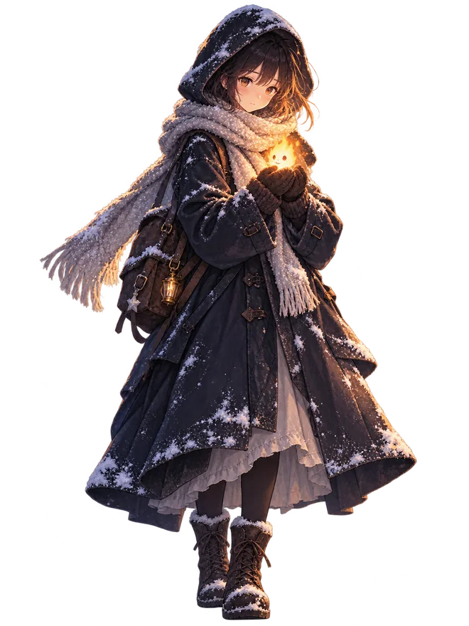

きえないで。
A SHORT NIGHT JOURNEY
♨灯り72%
≋息100%
✧記憶0 / 3
第一章 雪の路地窓の灯りが、帰り道の目印だった。

風が来たら長押し。凪いだら離す。家まで 100m
EMOTION GAME · PROTOTYPE
きえないで。
雪の町を越えて、小さな火の精を誰かのもとへ届ける。
風が吹いたらかばって、凪いだら手を離そう。
高精細アート統合版 · 90秒のプレイ体験